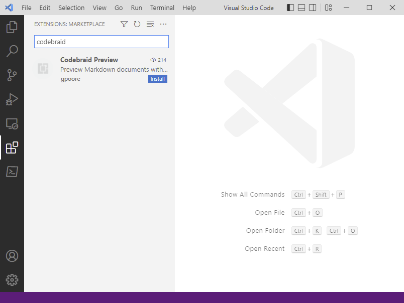
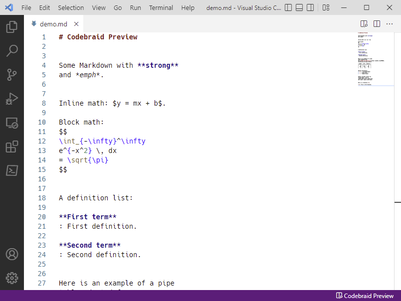

Installation
-
Install Pandoc. Download the latest version from GitHub, or see the Pandoc website for additional options and details for specific operating systems. Make sure that Pandoc is on your PATH.
-
Install Codebraid Preview. Open the Extensions manager (boxes icon in menu on left), then search for “codebraid”. You can also install via the Visual Studio Marketplace or Open VSX Registry, or download the
.vsixfile from GitHub for manual installation.
-
Install Codebraid (optional, for code execution). Available from PyPI and conda-forge, or directly from GitHub.
If you plan to use Jupyter kernels, you will also need
jupyter_clientand language kernels such asipykernel. Some or all of these may already be installed if you are using a full Anaconda installation.You may need to configure VS Code to work with Codebraid by specifying a Python interpreter. Use the Python: Select Interpreter command from the Command Palette (
Ctrl+Shift+P) to select the Python interpreter where Codebraid is installed. See the VS Code documentation for additional Python configuration details.
Starting the preview
Once the extension is installed, open a Markdown file (.md extension).
Click on the “Codebraid Preview” button in the status bar (bottom right).
Or run the Open Codebraid Preview command from the Command Palette
(Ctrl+Shift+P, then type command).
